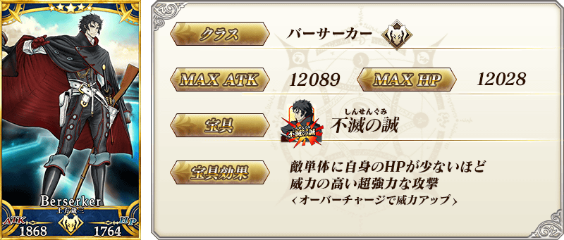
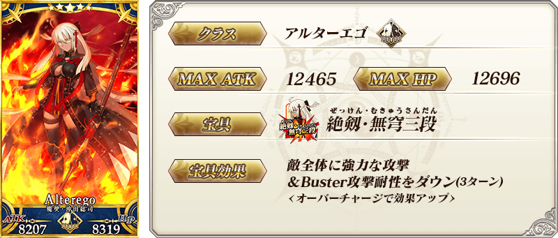
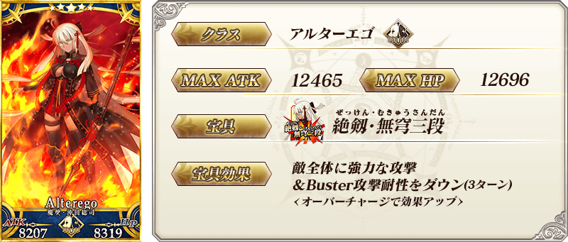
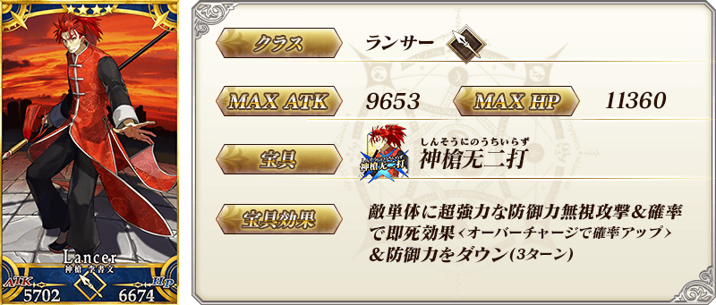
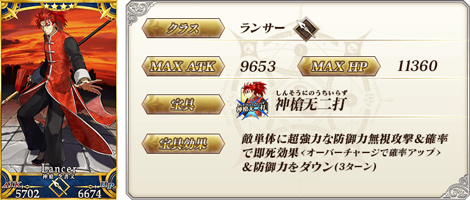
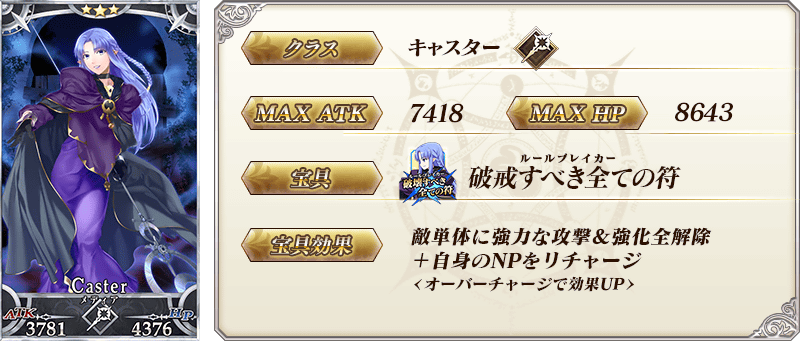
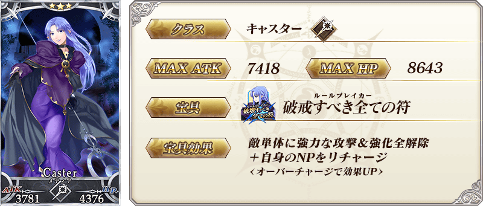
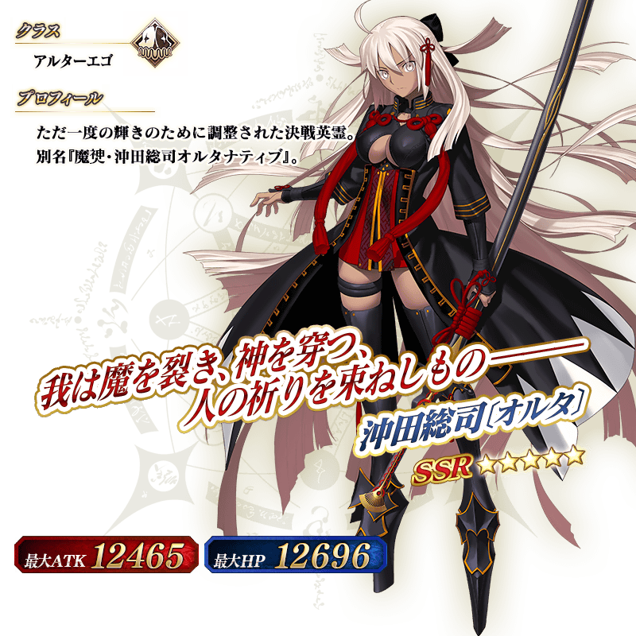

◆「復刻 GUDAGUDA帝都聖杯奇譚Pick Up召喚(每日交替)」期間◆
期間:2019年4月12日(五) 17:00～4月26日(五) 11:59
舉辦期間限定「復刻 GUDAGUDA帝都聖杯奇譚Pick Up召喚(每日交替)」！
變更在2018年舉辦的「GUDAGUDA帝都聖杯奇譚Pick Up召喚(每日交替)」一部份內容進行復刻。
※未通過終局特異點的狀態也能進行「復刻 GUDAGUDA帝都聖杯奇譚Pick Up召喚(每日交替)」。
於期間限定活動「復刻:GUDAGUDA帝都聖杯奇譚 輕量版」活躍的期間限定Servant「★5(SSR)土方歲三」「★5(SSR)沖田總司〔Alter〕」「★3(R)岡田以藏」登場！
本次包含上述Pick Up 7位的Servant！
「★5(SSR)土方歲三」「★3(R)美杜莎(Rider)」「★3(R)美狄亞」「★3(R)岡田以藏」以每日交替Pick Up！
「★5(SSR)沖田總司〔Alter〕」「★4(SR)Emiya(Archer)」「★4(SR)李書文(Lancer)」常駐Pick Up。
詳情請在聖晶石召喚畫面左下的召喚詳細確認。
「★5(SSR)帝都聖杯戦争」「★4(SR)坂本探偵事務所」「★3(R)牙研ぐ暗剣」做為期間限定概念禮裝登場！
裝備上述3種概念禮裝的話，在期間限定活動「復刻:GUDAGUDA帝都聖杯奇譚 輕量版」中會提升活動道具的掉落獲得數。
◆有關Servant的注意◆
※土方歲三、沖田總司〔Alter〕、岡田以藏在Pick Up期間結束後不會追加到故事召喚。
※請注意「復刻 GUDAGUDA帝都聖杯奇譚Pick Up召喚(每日交替)」做為每日交替，土方歲三、岡田以藏就算Pick Up期間中也會有不被抽出的日子。
※Emiya(Archer)、李書文(Lancer)、美杜莎(Rider)、美狄亞在Pick Up期間結束後仍會在故事召喚被抽出。
※Pick Up期間中，李書文(Lancer)就算通過各章前也能入手。
※請注意岡田以藏不會從友情點數召喚被抽出。
◆有關概念禮裝的注意◆ ※牙研ぐ暗剣在Pick Up期間中，也能靠友情點數召喚獲得。 ※請注意自友情點數召喚抽出的牙研ぐ暗剣在自動變還設定登錄★3(R)概念禮裝的情況，會變成自動變還的對象。
Pick Up期間中，期間限定Servant、Pick Up Servant、期間限定概念禮裝的出現機率提升！
10次召喚中確定1張★4(SR)以上和確定1位★3(R)以上的Servant！
※確定★4(SR)以上包含Servant和概念禮裝。
※本頁面皆為開發中圖片。會有與實際圖片相異的情況。
◆「復刻 GUDAGUDA帝都聖杯奇譚Pick Up召喚(每日交替)」Pick Up內容◆
| Pick Up期間 | Pick Up內容 | |
|---|---|---|
| 全天Pick Up | 每日交替追加Pick Up | |
| 4/12(五) 17:00～22:59 |
★5 沖田總司〔Alter〕 ★4 Emiya(Archer) ★4 李書文(Lancer) |
★3 岡田以藏 |
| 4/12(五) 23:00～ 4/13(六) 22:59 |
★5 沖田總司〔Alter〕 ★4 Emiya(Archer) ★4 李書文(Lancer) |
★3 美狄亞 |
| 4/13(六)23:00～ 4/14(日) 22:59 |
★5 沖田總司〔Alter〕 ★4 Emiya(Archer) ★4 李書文(Lancer) |
★3 美杜莎(Rider) |
| 4/14(日) 23:00～ 4/15(一) 22:59 |
★5 沖田總司〔Alter〕 ★4 Emiya(Archer) ★4 李書文(Lancer) |
★5 土方歲三 ★3 岡田以藏 |
| 4/15(一) 23:00～ 4/16(二) 22:59 |
★5 沖田總司〔Alter〕 ★4 Emiya(Archer) ★4 李書文(Lancer) |
★5 土方歲三 ★3 美狄亞 |
| 4/16(二) 23:00～ 4/17(三) 22:59 |
★5 沖田總司〔Alter〕 ★4 Emiya(Archer) ★4 李書文(Lancer) |
★5 土方歲三 ★3 美杜莎(Rider) |
| 4/17(三) 23:00～ 4/19(五) 22:59 |
★5 沖田總司〔Alter〕 ★4 Emiya(Archer) ★4 李書文(Lancer) |
★5 土方歲三 ★3 美杜莎(Rider) ★3 美狄亞 ★3 岡田以藏 |
| 4/19(五) 23:00～ 4/20(六) 22:59 |
★5 沖田總司〔Alter〕 ★4 Emiya(Archer) ★4 李書文(Lancer) |
★3 美杜莎(Rider) ★3 美狄亞 ★3 岡田以藏 |
| 4/20(六) 23:00～ 4/21(日) 22:59 |
★5 沖田總司〔Alter〕 ★4 Emiya(Archer) ★4 李書文(Lancer) |
★3 岡田以藏 |
| 4/21(日) 23:00～ 4/22(一) 22:59 |
★5 沖田總司〔Alter〕 ★4 Emiya(Archer) ★4 李書文(Lancer) |
★3 美狄亞 |
| 4/22(一) 23:00～ 4/23(二) 22:59 |
★5 沖田總司〔Alter〕 ★4 Emiya(Archer) ★4 李書文(Lancer) |
★3 美杜莎(Rider) |
| 4/23(二) 23:00～ 4/26(五) 11:59 |
★5 沖田總司〔Alter〕 ★4 Emiya(Archer) ★4 李書文(Lancer) |
★5 土方歲三 ★3 美杜莎(Rider) ★3 美狄亞 ★3 岡田以藏 |
※請注意會以每日交替變更Pick Up的Servant。

 
※上述「★5(SSR)沖田總司〔Alter〕」的卡面為靈基再臨第2階段。

※上述「★5(SSR)沖田總司〔Alter〕」的卡面為靈基再臨第2階段。


 
※上述「★4(SR)李書文(Lancer)」的卡面為靈基再臨第2階段。

※上述「★4(SR)李書文(Lancer)」的卡面為靈基再臨第2階段。


 
※上述「★3(R)美狄亞」的卡面為靈基再臨第2階段。

※上述「★3(R)美狄亞」的卡面為靈基再臨第2階段。

|
★★★★★SSR |

|
★★★★SR |

|
★★★R
|


 ※上述「★5(SSR)沖田總司〔Alter〕」的立繪為靈基再臨第2階段。


介紹「★5(SSR)土方歲三」「★5(SSR)沖田總司〔Alter〕」「★3(R)岡田以藏」的寶具演出！
在「Fate/Grand Order」官方網站內的公告中，以影片公開寶具演出，敬請確認。
介紹「★4(SR)Emiya(Archer)」「★4(SR)李書文(Lancer)」的寶具演出！
在「Fate/Grand Order」官方網站內的公告中，以影片公開寶具演出，敬請確認。
其他還有，期間限定活動「復刻:GUDAGUDA帝都聖杯奇譚 輕量版」同時舉辦！
關於詳情，請自下述橫幅確認。